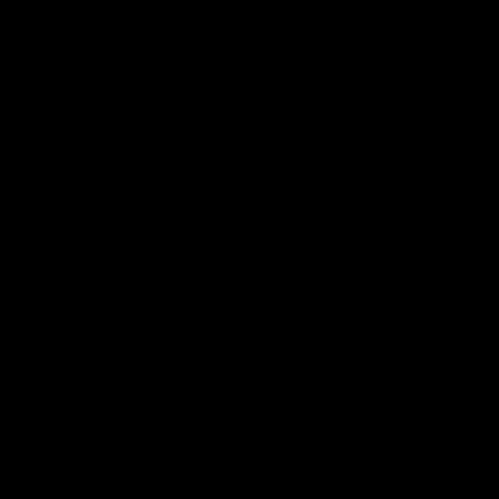

SnapDimension Support
Measure it. Mark it. Share it.
Add dimensions you measure yourself to photos of furniture, rooms and DIY projects.
Ask for help on GitHubGitHub sign-in is needed to post. Issues are public. Please include the app version, iOS version and steps to reproduce; do not post private photos, addresses or payment details.
How do I add a dimension?
Take or choose a photo. Select Dimension and drag between two points. Enter a value from your tape measure, then save. Select a mark to move it, adjust either endpoint or use Fine-tune placement. The app does not measure real-world sizes from photos.
What is free?
One editable project with one photo, every annotation tool, undo and redo, and unlimited image sharing without a watermark. Delete your current project to start another.
What does Lifetime Pro include?
One non-consumable purchase unlocks unlimited projects, multiple photos (up to 30 per project), batch image sharing and PDF export. No subscription. Apple displays your local price.
Restore a purchase
Open Get Pro → Restore Purchases with the Apple Account that made the purchase. If Apple has not made the product available, try Reload App Store price. For a refund, use Apple’s purchase support.
Keep important work
Projects stay on this iPhone and are excluded from automatic device backup. There is no cloud sync or automatic backup. Deleting a project or the app removes editable data. Export images or PDFs first; flattened exports cannot restore editable marks.
Camera and privacy
Camera access is requested when you take a photo. You can deny it and choose selected photos instead. The app has no accounts, ads, analytics SDK or automatic photo uploads.